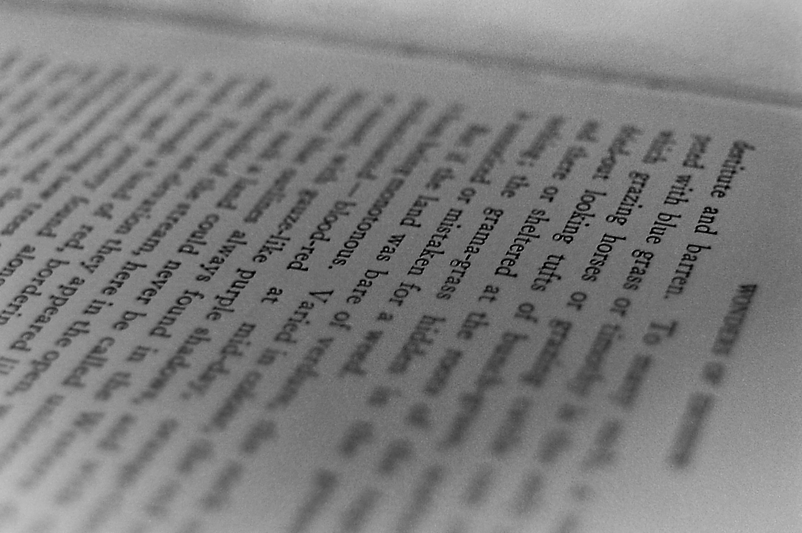

I don't know what's going on. Just fake it till ya make it.
If You Forget Me by Pablo Neruda If You Forget Me I want you to know one thing. You know how this is: if I look at the crystal moon, at the red branch of the slow autumn at my window, if I touch near the fire the impalpable ash or the wrinkled body of the log, everything carries me to you, as if everything that exists, aromas, light, metals, were little boats that sail toward those isles of yours that wait for me. Well, now, if little by little you stop loving me I shall stop loving you little by little. If suddenly you forget me do not look for me, for I shall already have forgotten you. If you think it long and mad, the wind of banners that passes through my life, and you decide to leave me at the shore of the heart where I have roots, remember that on that day, at that hour, I shall lift my arms and my roots will set off to seek another land. But if each day, each hour, you feel that you are destined for me with implacable sweetness, if each day a flower climbs up to your lips to seek me, ah my love, ah my own, in me all that fire is repeated, in me nothing is extinguished or forgotten, my love feeds on your love, beloved, and as long as you live it will be in your arms without leaving mine.
